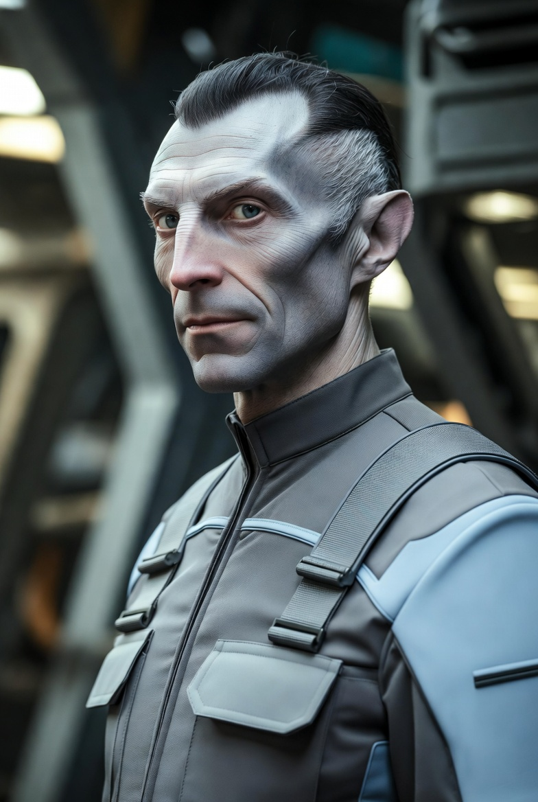

Typical of Selenites, Ata is tall, slender, and relatively frail. He spent four terms in the IISS working in the Courier branch. While most couriers tend to be somewhat unremarkable, Ata stands out due to being an expert astrogator.
Ata has an ally in the IISS: Basilio Xavier, an administrator with access to high-ranking scouts and decision-makers. Xavier is pure Solomani and loyal to the Imperium. From his administrative role, Xavier can direct scout ships to support the mission of the Amelia Grace.

Stats
| Char | Score | Modifier | Temp Score | Temp Mod |
|---|---|---|---|---|
| STR | 5 | -1 | - | - |
| DEX | 10 | +1 | - | - |
| END | 5 | -1 | - | - |
| INT | 9 | +1 | - | - |
| EDU | 9 | +1 | - | - |
| SOC | 9 | +1 | - | - |
| MRL | 9 | +1 | - | - |
| SAN | 11 | +1 | - | - |
Skills
- Pilot (spacecraft) 1
- Survival 0
- Astrogation 3
- Gun Combat 0
- Mechanic 1
- Vacc Suit 2
- Flyer (Grav) 1
- Athletics (Dexterity) 1
- Diplomat 1
- Electronics (Sensors) 1
Armor
| Armor Type | Protection | TL | RAD | KG | Cost | Required Skill |
|---|---|---|---|---|---|---|
| No armor listed. | ||||||
Ranged Weapons
| Weapon | TL | Range | Damage | KG | Cost | Magazine | Mag Cost | Traits |
|---|---|---|---|---|---|---|---|---|
| No ranged weapons listed. | ||||||||
Melee Weapons
| Weapon | TL | Range | Damage | KG | Cost | Traits |
|---|---|---|---|---|---|---|
| No melee weapons listed. | ||||||
Gear
| Item | TL | Effect | KG | Cost |
|---|---|---|---|---|
| No gear listed. | ||||
Background
Ata Saxena is an ex-IISS Courier branch scout and expert astrogator attached to the wider Amelia Grace mission network. His strongest value to the team is navigation under difficult conditions, supported by scout-service contacts and Selenite zero-G aptitude.
Associated NPCs
- Emana Zulu — Lead engineer of the Amelia Grace
- Countess Minister MacKenzie Danisi — Custodian of the Amelia Grace
- Hazuren Omadim — Steward of the Amelia Grace
- Colonel Asemote Majali — Head of Security for Countess Danisi
- Mart Badry — Second engineer of the Amelia Grace
- Dr. Adelita Dasel — Ship's Doctor of the Amelia Grace
- Mikhail Floros — Team Technician
- ????? — Team Data Specialist
- Captain Naen Luug — Captain of the Amelia Grace
- Gahizi Cloutier — Pilot of the Amelia Grace
Associated Starships
- Amelia Grace — 400 dton private yacht
Associated Factions
- Imperial Ministry of State